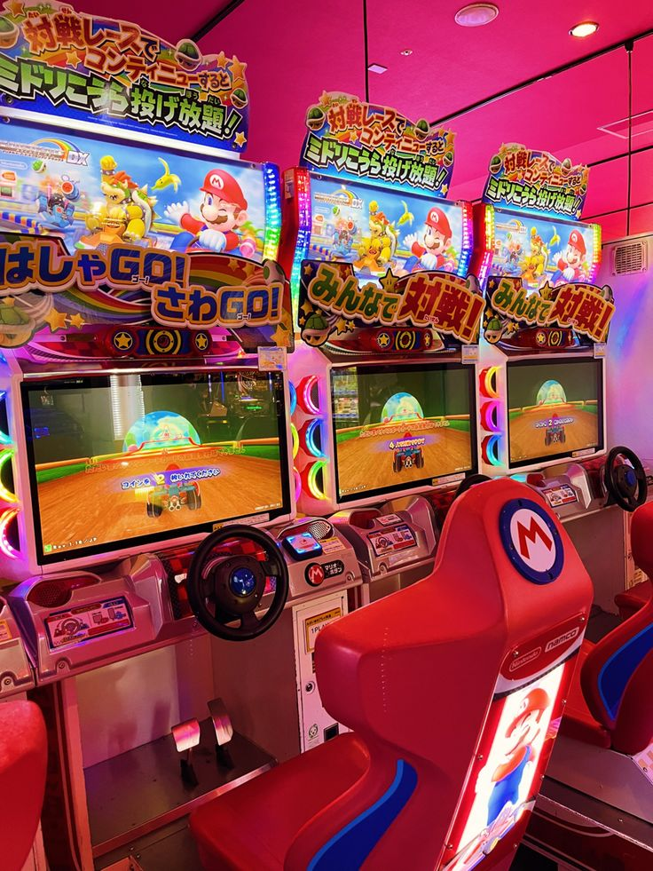

Arcades Japonaises
Rhythm games, UFO catchers, versus fighting : où jouer, budget type, et les codes à respecter.
Types de jeux
- Rhythm games — Taiko no Tatsujin, MaiMai, Chunithm…
- UFO catchers — Machines à pinces (attention au budget).
- Versus fighting — Communautés actives, tournois réguliers.
Où aller & budget
Tokyo : Akihabara, Shinjuku, Ikebukuro. Osaka : Namba/Den‑Den Town. Prévois des pièces et demande avant de filmer.